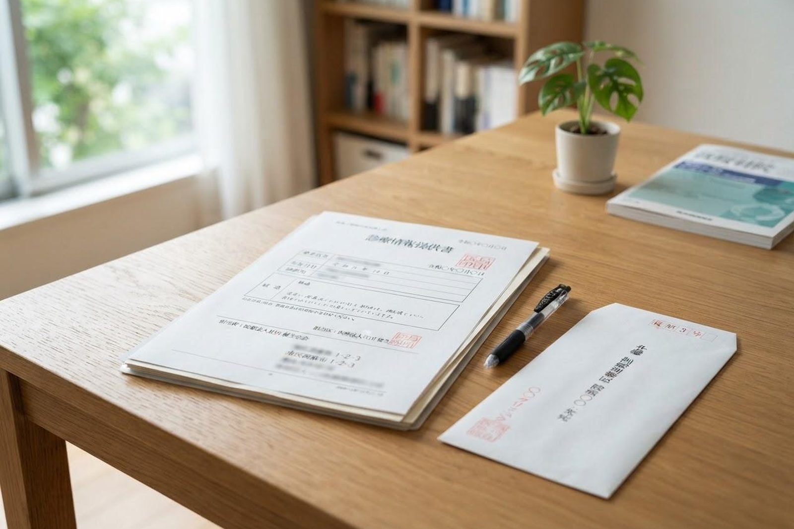

主治医意見書は誰に書いてもらうのですか？
A. 回答要介護認定の申請をすると、市町村から主治医へ直接、意見書の作成が依頼されます。ご家族が医療機関に取りに行ったり、書類を届けたりする必要はありません。作成にかかる費用は市町村が負担するため、ご本人のご負担もありません。申請書に主治医の氏名と最後に受診した月を書く欄があるので、その情報だけご準備ください。

意見書には何が書かれますか
診断名だけを書く書類ではありません。介護がどれくらい必要かを判断するための材料として、次のような内容が記載されます。
- 現在の病気と、これまでの経過、症状が安定しているかどうか
- 特別な医療の有無（点滴、じょくそうの処置、酸素療法、経管栄養など）
- 移動や食事、排せつといった生活動作の状況
- 認知症に関する所見、周囲への影響
- 今後のサービス利用にあたって医学的に注意すべきこと
かかりつけ医がいない場合
長く受診していない、どこがかかりつけかわからないという場合は、申請の際に市の窓口でご相談ください。市が指定する医師の診察を受けて意見書を作成してもらう方法があります。ただし、初めて診る医師には普段の様子がわかりません。可能であれば、申請の前に一度どこかの医療機関を受診しておくほうが、実態に近い内容になります。
実態が伝わる意見書にするために
診察室でのご本人は、ふだんよりしっかりして見えることが少なくありません。医師は診察で見える範囲の情報しか持っていないため、ご家族からの情報が重要になります。
受診のときに医師へ伝えるとよいこと
- 介護保険を申請する予定であること（これを伝えるだけでも変わります）
- 自宅での様子。とくに夜間、入浴、トイレ、食事の場面
- この半年で変わったこと（転んだ、体重が減った、道に迷った など）
- ご家族が実際に手伝っている内容と、その頻度
- 言いにくい内容は、メモを渡す方法もあります
結果に納得できないとき
認定結果が実際の状態と合わないと感じた場合、区分変更の申請ができます。意見書の内容だけが結果を決めるわけではありませんが、状態が伝わりきっていなかった可能性はあります。担当のケアマネジャー、または主治医にご相談ください。
当院での対応
当院をかかりつけとされている方の主治医意見書を作成しています。申請を考えている段階で受診の際にお伝えいただければ、日ごろの経過を踏まえて記載します。訪問診療を受けている方についても同様です。
当院では訪問診療・訪問看護を行っているほか、デイサービス・訪問介護・小規模多機能ホーム「こはる日和」、かしわじま居宅介護支援センター、サービス付高齢者向け住宅「メディケアビレッジかしわじま」を運営しています。医療と介護のどちらの窓口からでもご相談いただけます。
介護保険の申請を考えている旨を、受診の際にお伝えください。
最終更新：2026年8月26日